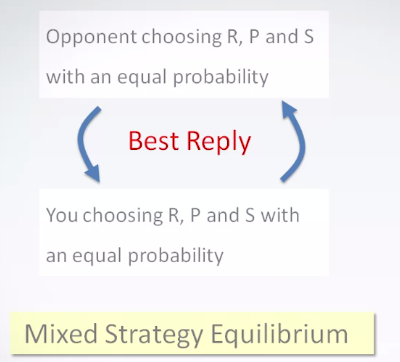
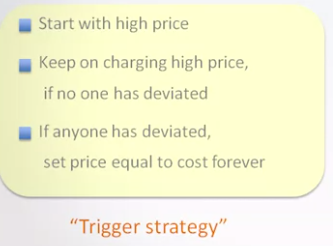

Definitions
https://www.coursera.org/learn/game-theory-introduction
Strategic Situation -> What is best for you depends on what others do.
Rational actors = those that maximize payoffs
Game theory -> constructs mathematical models to examine or predict how people behave in strategic situations.
-
Individuals will try their best when competing against each other
-
Under a certain set of rules.
Social problems can be formulated as mathematical models -> Games.
The model consists the following components:
-
The players
-
Strategy (what each player can do, which actions they can take) usually denoted as a~i~
- Strategy set = range of strategies players can use denoted as A~i~
-
Payoffs denoted as g~i.~ They usually depend on the other players strategies/actions: (a~1,~a~2~...)
Example model setup for traffic problem. How does a new bypass affect traffic/drivers:
Rationality
A rational player never chooses a strictly dominated strategy.
Infinite regress with human actors
Rationality alone fails to pin down individuals\' behavior in social problems.
This is the reason why we need game theory.
Domination
Payoffs
When there is no uncertainty (no random events and no random behaviour): It's sufficient to assign larger numbers for better outcomes.
When there is uncertainty: Payoffs should be assigned more precisely to represent the player's attitude toward risk (e.g. by assigning utilities to the payoffs).
Nash equilibrium
Surface of a coffee stirred in a cup as an analogy to the set of possible human behavior.
Nash discovered that every social problem has a "stable point" where all individual are doing there best against each others -> Nash equilibrium
If two players are choosing to play the Nash equilibrium strategy. No one can gain(getting a higher payoff) by deviating from this strategy on their own. The Nash equilibrium represents the mutually best response.
It represents a combination of strategies in which no single player can increase their payoff by deviating unilateraly. This is a unified solution concept that can be applied in a wide range of games.
Nash equilibrium example1

Determine the Nash equilibrium before and after the construction of the new bypass.
Nash equilibrium = No traveler can save time by changing their route.
Nash equilibrium (without Bypass):
| Route | Cars | Route length | Payoff |
|---|---|---|---|
| 1 | 25 | 350 | 375 |
| 2 | 125 | 250 | 375 |
| 750 |
Nash equilibrium (with Bypass):
| Route | Cars | Route length | Payoff |
|---|---|---|---|
| 1 | 0 | 350 | 0 |
| 2 | 50 | 250 | 300 |
| 3 | 100 | 200 | 300 |
| 600 |
Travel time saved by bypass = 150.
Nash equilibrium example 2
Finding Nash equilibrium
-
Mark the best choice for each player's opponent choice
-
If there is a match, it's a Nash equilibrium
Simultaneous Move Game
-
\"Static\" game
-
Players take their actions at the same time, and the game ends immediately
-
Game theory predicts that the outcome is a Nash equilibrium
Prisoner's dilemma
Two members of a criminal gang are arrested and imprisoned. Each prisoner is in solitary confinement with no means of communicating with the other. The prosecutors lack sufficient evidence to convict the pair on the principal charge, but they have enough to convict both on a lesser charge. Simultaneously, the prosecutors offer each prisoner a bargain. Each prisoner is given the opportunity either to betray the other by testifying that the other committed the crime, or to cooperate with the other by remaining silent. The possible outcomes are:
-
If A and B each betray the other, each of them serves 10 years in > prison
-
If A betrays B but B remains silent, A will be set free and B will > serve 15 years in prison
-
If A remains silent but B betrays A, A will serve 15 years in prison > and B will be set free
-
If A and B both remain silent, both of them will serve only one year > in prison (on the lesser charge).
| ½ | Cooperate | Defect |
|---|---|---|
| Cooperate | -1,-1 | -15,0 |
| Defect | 0,-15 | -10,-10 |
-
If your opponent cooperates your best choice is to defect (-1 vs. 0 payoff)
-
If your opponent defects your best choice is the defect too (-15 vs. -10)
-
To always defect is the best choice (-10,-10) = Nash equilibrium
-
The dilemma occurs because individual's rationality does not lead to the overall best choice (-1,-1)
- What is best for the group (group rationality) is not always equal to a result based on each of the individual's rationality choices.
Group vs. individual payoffs
Best payoff for society = Any point where A's payoff cannot be increased without decreasing B's payoff and vice versa.
Efficient outcomes \<> nash equilibrium or individuals best choices
- Benefit of good behavior may not come to you
Rational individuals may not take socially desirable behavior
I scratch your back -> You scratch my back
- Cost of cheating might be paid by others
Coordination game
QWERTY Keyboard vs. Dvorak keyboard
| ½ | QWERTY | Optimal |
|---|---|---|
| QWERTY | 1,1 | 0,0 |
| Optimal | 0,0 | 2,2 |
-
Choosing different designs for each player is not convenient
-
There are two Nash equilibria in this game. One is better than the others.
-
Based on social/cultural habits most likely the less optimal solution is going to stay in this case.
- Society is trapped in the worse Nash equilibrium because if only one player moves they will be worse off.
Mixed strategy equilibrium
Rock paper scissors
In those games it's important to make yourself unpredictable by using a random response -> mixed strategy equilibrium. Through the mixed strategy equilibrium one can assign probabilities to the events.

Sports games and game theory
Penalty shots
Probability of goal in different combinations of goalie jumping to one side and kicker kicking to one side
The mixed strategy equilibrium is the value for p that makes the equations 1 and 2 equal
https://www.wolframalpha.com/input/?i=58.3p+%2B+94.97%281-p%29+%3D+92.92p+%2B+69.92%281-p%29
Finding mixed strategy equilibrium
Payoff table
The black player will have the remaining winning rate (1-.4) = .6
Evolutionary game theory
Assuming zero-intelligent actors with adaption through mutation and natural selection (survival of the fittest)
Payoff = Successful strategy has more offspring.
The survival of the fittest does not lead to one species overtaking every one else or one species always being optimal. Because of Nash equilibrium like in the prisoners' dilemma there is a benefit for mutant genes or species to defect.
Group vs. individual payoffs
Best payoff for society = Any point where A's payoff cannot be increased without decreasing B's payoff and vice versa.
Efficient outcomes \<> nash equilibrium or individuals best choices
- Benefit of good behavior may not come to you
Rational individuals may not take socially desirable behavior
I scratch your back -> You scratch my back
- Cost of cheating might be paid by others
Coordination game
QWERTY Keyboard vs. Dvorak keyboard
| ½ | QWERTY | Optimal |
|---|---|---|
| QWERTY | 1,1 | 0,0 |
| Optimal | 0,0 | 2,2 |
-
Choosing different designs for each player is not convenient
-
There are two Nash equilibria in this game. One is better than the others.
-
Based on social/cultural habits most likely the less optimal solution is going to stay in this case.
- Society is trapped in the worse Nash equilibrium because if only one player moves they will be worse off.
Economics supply and demand
Laissez-faire argument
Game theory: The agreement reached in (3) might not be sustainable
Ways to achieve the best outcome for society
1)
Mechanism/Market Design: Since game theory predicts outcomes based on the rules of a game one can reverse engineer the rules that will achieve a good outcome. In that way a system can be designed in such a way that players have an incentive to achieve a good outcome.
Cooperation in long term relationship
Example with two gas stations that are right next to each other. Assumptions:
-
Same product
-
Same unit cost (production cost) = 2\$
-
If the price is different all customers go to the cheaper stations
-
If the price is equal all customers will be split equally
The Nash equilibrium in this case is both gas stations charging \$2. If one gas station will increase the price customers will keep going to the cheaper station. If one gas station is trying to undercut \$2, they will not gain either since they will decrease their profit (making it negative).
The above is only true if the game is playing paid only once. Since the game is being played continuously, they are establishing a long-term relationship.
-
Same players
-
Play the same game continuously
Repeated game. If the game played every day is a price competition, it's also called "stage game".

To evaluate the impact of this strategy we need to take a discounted future payoff into consideration (a payoff today is worth less than a payoff tomorrow).
What happens if one gas stations decides to undercut the prices of the other on 1^st^ March?
Brand and reputation as substitute for long term relationship
In a situation where there is no long term relationship like for a high priced restaurant in a tourist area with a low amount of returning customers (same applies for any low frequent high cost purchase). The restaurant can only establish a high price (expecting high quality in return) by reputation/brand since customers will need to trust that the quality of the food will match the high price and they cannot punish the restaurant by not coming back. On the other hand the customers can punish the restaurants by giving them a bad review which lowers their reputation in turn.